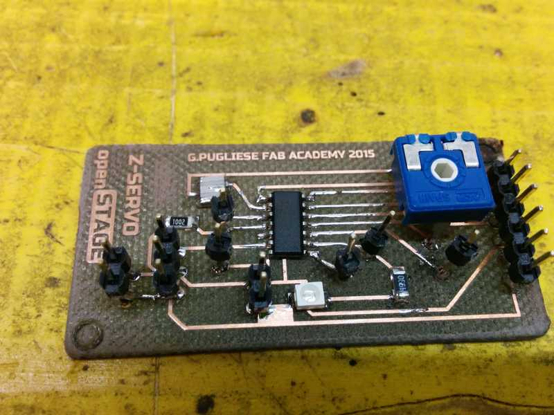

<<<<<<< HEAD
Exercise 11
15.04.2015
Output Devices
Assignment
- add an output device to a microcontroller board you've designed and
program it to do something
Servo motor
During this week I tried to make a board that will be useful for my final
project.
In the final project I need a little board that control a micro servo to
up and down the tool (a pen for example) and maybe do a Z position with a
potentiometer
To make this board I won't to use an atmega328 because is much, so I
decided to use an Attiny44. I saw the datasheet and schematic during past
week and I think that is perfect for this scope.
I started planning what the board will do:
- Read a potentiometer
- move the servo in the position read from potentiometer
- listen a signal in a digital pin
- if digital pin is High put servo in 0 position
- if digital pin is low put the servo in the position mapped from
potentiometer
I designed the board in Eagle starting from an Hello Board

As described above I connected
PIN 4 -- LED
PIN3 -- INPUT
PIN2 -- POTENTIOMETER
PIN 7 -- SERVO
I also wired some power aux to power eventually some tools
Here you can download the
EAGLE FILES
The sketch is simple and I started using the Servo library example.
But I discovered that the standard servo library doesn't work with Attiny
and I have to use another library called
SoftwareServo
this is the code to control my board
/* Sketch to control the pen position in OPENstage */
=======
Exercise 11
15.04.2015
Output Devices
Assignment
- add an output device to a microcontroller board you've designed and program it to do something
Servo motor
During this week I tried to make a board that will be useful for my final project.
In the final project I need a little board that control a micro servo to up and down the tool (a pen for example) and maybe do a Z position with a potentiometer
To make this board I won't to use an atmega328 because is much, so I decided to use an Attiny44. I saw the datasheet and schematic during past week and I think that is perfect for this scope.
I started planning what the board will do:
- Read a potentiometer
- move the servo in the position read from potentiometer
- listen a signal in a digital pin
- if digital pin is High put servo in 0 position
- if digital pin is low put the servo in the position mapped from potentiometer
I designed the board in Eagle starting from an Hello Board
As described above I connected
PIN 4 -- LED
PIN3 -- INPUT
PIN2 -- POTENTIOMETER
PIN 7 -- SERVO
I also wired some power aux to power eventually some tools
Here you can download the
EAGLE FILES
The sketch is simple and I started using the Servo library example.
But I discovered that the standard servo library doesn't work with Attiny and I have to use another library called
SoftwareServo
this is the code to control my board
/* Sketch to control the pen position in OPENstage */
>>>>>>> 581ff298991767474d95765a0273602ab42de236
#include
SoftwareServo myservo; // create servo object to control a servo
int pos = 0;
int potpin = 2; // analog pin used to connect the potentiometer
int val; // variable to read the value from the analog pin
int Zup;
bool Zadj; // if true I can adjust servo position by potentiometer
int prevVal;
int zeta;
void setup()
{
Zup=10; //servo at 10 degree for pen in high position
myservo.attach(7); // attaches the servo on pin 9 to the servo object
myservo.write(Zup); //Put servo at 10 angle
SoftwareServo::refresh();
Zadj=true; //adjust servo position with potentiometer
goDown = true;
}
void loop() {
prevVal = val;
val = analogRead(potpin); // reads the value of the potentiometer (value between 0 and 1023)
val = map(val, 0, 1023, 0, 180); // scale it to use it with the servo (value between 0 and 180)
if ( digitalRead(3)==LOW){ //pen in high position (maybe M09 from gcode)
myservo.write(Zup); //Put servo at 10 angle
SoftwareServo::refresh();
}else
if ( digitalRead(3)==HIGH){ //pen in low position (maybe M08 from gcode)
myservo.write(val); //if Pin IN is HIGH servo UP
SoftwareServo::refresh();
}
delay(15); // waits for the servo to get there
}
<<<<<<< HEAD
To program the board I used Arduino IDE as described in
THIS
LINK
this is the board that I have soldered

The board have a little noise that I try to cancel with a capacitor,
below there is a little video that show how it works